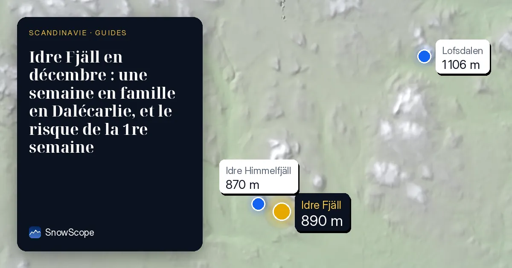

Idre Fjäll en décembre : une semaine en famille en Dalécarlie, et le risque de la 1re semaine
Début décembre à Idre Fjäll, c'est un pari, mais la semaine avant Noël et la semaine de Noël offrent des chances bien meilleures. Un 15 décembre typique, la mi-montagne (733 m) affiche 32 cm—juste au-dessus de la ligne des 30 cm où le ski devient facile sur les pistes préparées. La forme du mois compte bien plus que les chutes totales.
Consultez les prévisions neige en temps réel pour Idre Fjäll sur l'application SnowScopeHauteurs de neige, alertes poudreuse et carte 3D, gratuitement.
Quand réserver si vous avez le choix
Seulement 39 % des hivers passés avaient 30 cm ou plus à mi-montagne la première semaine de décembre. Entre le 8 et le 14 décembre, ce pourcentage monte à 52 %. Le saut survient la semaine du 15–21 décembre, quand 65 % des hivers atteignent 30 cm ou plus. La semaine de Noël (22–28 décembre) est le pari le plus sûr : 76 % des hivers ont un bon manteau blanc à ce moment.
Au sommet (888 m), le tableau est encore meilleur. La semaine de Noël voit une bonne neige dans 83 % des hivers. Si vos dates sont flexibles, décaler d'une semaine change réellement vos chances de skier sur une base solide.


Le risque de réserver début décembre
L'hiver dernier (2025–26) montre pourquoi début décembre semble incertain. La mi-montagne n'avait que 28 cm le 15 décembre et 22 cm la veille de Noël. C'était skiable sur les pistes préparées, mais les rochers pointaient sur les côtés, et de nombreuses pentes nécessitaient un damage soigné.
Si vous devez réserver la première semaine de décembre, ayez un plan B. Soit allez plus au nord vers les hautes montagnes, soit acceptez de ne skier que sur les pistes damées et tollez un manteau fin par endroits. La semaine de Noël de l'hiver dernier était bien meilleure : la mi-montagne avait 29 cm le 24 décembre.
Comment le mois a changé
Décembre avait autrefois plus de neige. Les 15 premiers hivers de nos observations (1980–81 à 1994–95), la mi-montagne affichait en moyenne 39 cm en décembre. Ces 15 derniers hivers (2011–12 à 2025–26), c'est tombé à 29 cm. Le pourcentage de semaines de Noël avec 30 cm est passé de 87 % à 60 %.
C'est un vrai changement, mais ne signifie pas que décembre est peu fiable maintenant—juste qu'il faut choisir ses dates avec soin. Les semaines de mi à fin mois restent relativement sûres selon les normes régionales.
L'altitude fait la différence
Le sommet (888 m) a toujours plus de neige que la base (578 m). À la semaine de Noël, la mi-montagne a 30 cm ou plus dans 76 % des hivers, mais le sommet l'atteint dans 83 %. Le premier jour typique avec 30 cm à mi-montagne est le 7 décembre ; au sommet, c'est le 30 novembre—plus d'une semaine plus tôt.
Si votre famille est à l'aise sur les pentes raides et les pistes hautes, vous avez de meilleures chances de trouver une base correcte. Le dénivelé est faible (310 m), mais ces mètres comptent en décembre.
Et Sälen à la place ?
Sälen, plus au sud en Dalécarlie, ressemble sur la carte mais a de plus faibles chances de neige en décembre. Ses collines arrondies donnent une valeur sur toute la zone : 28 cm un 15 décembre typique. Seulement 48 % des hivers voient 30 cm la semaine du 15–21 décembre, contre 65 % à la mi-montagne d'Idre.
Si vous avez besoin d'un plan B, Sälen ne l'est pas. Si vous pouvez voyager plus loin, les hautes montagnes de Norvège ou du nord-ouest suédois offrent une profondeur de décembre plus fiable.
Étapes pratiques avant de réserver
Idre Fjäll publie les tarifs des remontées via la réservation dynamique sur son site officiel. Vérifiez le coût exact pour vos dates avant de vous engager. Ni ici ni à Sälen n'avons-nous pu confirmer un prix fixe le 13 novembre.
Réservez la semaine du 15–28 décembre si les dates sont flexibles. Si vous devez réserver début décembre, demandez une clause d'annulation gratuite et revérifiez la carte de neige fin novembre. Les jours courts signifient organiser le temps soigneusement autour de la lumière, et le froid exige des couches pour les jeunes skieurs.
Conseils aux skieurs
- Évitez le 1–7 décembre : seulement 39 % des hivers ont 30 cm à mi-montagne. La première semaine est un pari.
- Visez le 15–28 décembre : la semaine avant Noël et la semaine de Noël donnent 65–76 % de chances d'avoir 30 cm ou plus à mi-montagne.
- Skiez les pistes hautes si vous pouvez : le sommet (888 m) a de la bonne neige dans 83 % des hivers la semaine de Noël, contre 76 % à mi-montagne.
- Réservez avec une clause d'annulation si les dates de décembre sont fixées des mois à l'avance, et revérifiez la prévision de neige début décembre.
- Apportez des couches et organisez la journée autour de la courte lumière du jour. La neige fine du 24 décembre de l'hiver dernier montre pourquoi le damage et le choix de ligne soigné importent sur un manteau de début de saison.
À propos de ces chiffres
Les hauteurs de neige des stations sont la neige la plus épaisse sur le haut du domaine à la date indiquée ; ce sont des estimations pour une zone, pas une mesure en un point. Les prévisions peuvent changer. Consultez toujours le bulletin d'avalanche officiel avant le hors-piste.
Bulletins d'avalanche officiels: Lavinprognoser (Naturvårdsverket)
Citer ce bulletin
Pour la recherche, l'enseignement ou la presse : chiffres et graphiques réutilisables librement sous CC BY 4.0 avec cette citation.
SnowScope (2026), Idre Fjäll en décembre : une semaine en famille en Dalécarlie, et le risque de la 1re semaine, https://snowscope.app/blog/fr/2026/11/idre-fjall-december-family-ski-budget-sweden.html, consulté le 2026-11-14
SnowScope (Atlas Labs). (2026, November 14). Idre Fjäll en décembre : une semaine en famille en Dalécarlie, et le risque de la 1re semaine. SnowScope snow reports. https://snowscope.app/blog/fr/2026/11/idre-fjall-december-family-ski-budget-sweden.html
BibTeX
@misc{snowscope2026idrefjalldecemberfamilys,
author = {{SnowScope (Atlas Labs)}},
title = {Idre Fjäll en décembre : une semaine en famille en Dalécarlie, et le risque de la 1re semaine},
year = {2026},
month = nov,
howpublished = {\url{https://snowscope.app/blog/fr/2026/11/idre-fjall-december-family-ski-budget-sweden.html}},
note = {Published 2026-11-14 20:11 UTC; accessed 2026-11-14}
}· CC BY 4.0 · Méthodes, données et outils →
Idre Fjäll : neige et température selon l'altitude, cet hiver vs l'hiver dernier (outils) →
Suivre Idre Fjäll
Gratuit : un message quand la neige arrive, et la météo chaque matin.